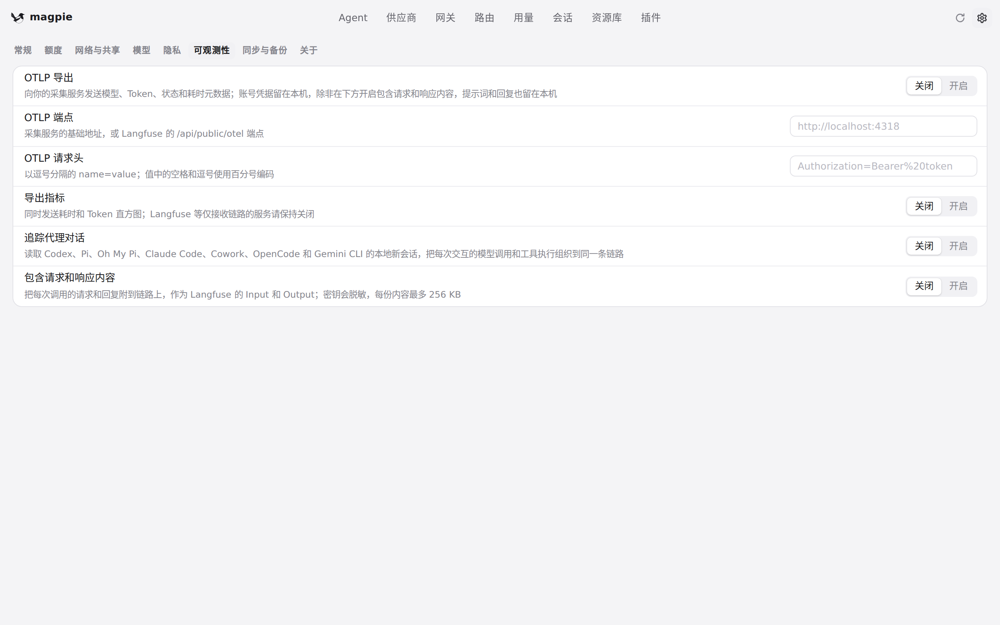
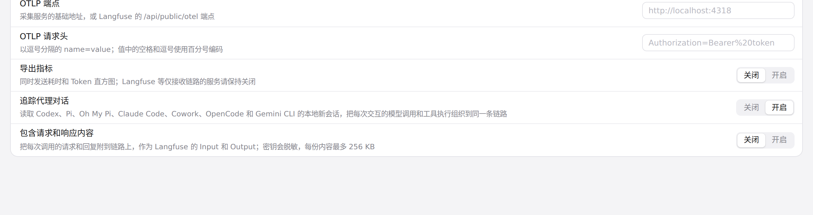

#581 界面预览
commit 97197bc · 回到 PR · 在「设置 → 可观测性」里新增一行开关「追踪代理对话」（默认关闭，中英文均已翻译），用于把本地 Agent 会话导出成 Langfuse 链路；其余改动都在后端导出与采集逻辑，magpie 自身界面没有其他可见变化。
红线是鼠标走过的轨迹，红色圆环是一次点击；底部文字是这一步在做什么。空格暂停，← → 逐段查看。

设置里新增的会话追踪开关 · 可观测性设置页，新增的「追踪代理对话」一行

设置里新增的会话追踪开关 · 点击「开启」后的这一行